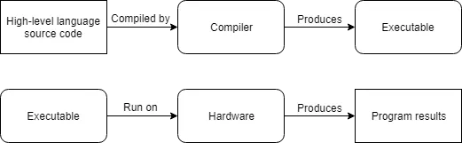
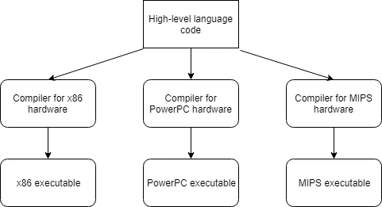

A computer’s CPU is incapable of speaking C++. The limited set of instructions that a CPU can understand directly is called machine code (or machine language or an instruction set). Here is a sample machine language instruction: 10110000 01100001 Back when computers were first invented, programmers had to write programs directly in machine language, which was a very difficult and time consuming thing to do. How these instructions are organized is beyond the scope of this introduction, but it is interesting to note two things. First, each instruction is composed of a sequence of 1’s and 0’s. Each individual 0 or 1 is called a binary digit, or bit for short. The number of bits that make up a single command vary -- for example, some CPUs process instructions that are always 32 bits long, whereas some other CPUs (such as the x86 family, which you are likely using) have instructions that can be a variable length. Second, each set of binary digits is interpreted by the CPU into a command to do a very specific job, such as compare these two numbers, or put this number in that memory location. However, because different CPUs have different instruction sets, instructions that were written for one CPU type could not be used on a CPU that didn’t share the same instruction set. This meant programs generally weren’t portable (usable without major rework) to different types of system, and had to be written all over again.
Because machine language is so hard for humans to read and understand, assembly language was invented. In an assembly language, each instruction is identified by a short abbreviation (rather than a set of bits), and names and other numbers can be used. Here is the same instruction as above in assembly language: mov al, 061h This makes assembly much easier to read and write than machine language. However, the CPU can not understand assembly language directly. Instead, the assembly program must be translated into machine language before it can be executed by the computer. This is done by using a program called an assembler. Programs written in assembly languages tend to be very fast, and assembly is still used today when speed is critical. However, assembly still has some downsides. First, assembly languages still require a lot of instructions to do even simple tasks. While the individual instructions themselves are somewhat human readable, understanding what an entire program is doing can be challenging (it’s a bit like trying to understand a sentence by looking at each letter individually). Second, assembly language still isn’t very portable -- a program written in assembly for one CPU will likely not work on hardware that uses a different instruction set, and would have to be rewritten or extensively modified.
To address the readability and portability concerns, new programming languages such as C, C++, Pascal (and later, languages such as Java, Javascript, and Perl) were developed. These languages are called high level languages, as they are designed to allow the programmer to write programs without having to be as concerned about what kind of computer the program will be run on.
Here is the same instruction as above in C/C++: a = 97;
Much like assembly programs, programs written in high level languages must be translated into a format the computer can understand before they can be run. There are two primary ways this is done: compiling and interpreting.
A compiler is a program that reads source code and produces a stand-alone executable program that can then be run. Once your code has been turned into an executable, you do not need the compiler to run the program. In the beginning, compilers were primitive and produced slow, unoptimized code. However, over the years, compilers have become very good at producing fast, optimized code, and in some cases can do a better job than humans can in assembly language!
Here is a simplified representation of the compiling process:

Since C++ programs are generally compiled, we’ll explore compilers in more detail shortly.
An interpreter is a program that directly executes the instructions in the source code without requiring them to be compiled into an executable first. Interpreters tend to be more flexible than compilers, but are less efficient when running programs because the interpreting process needs to be done every time the program is run. This means the interpreter is needed every time the program is run.
Here is a simplified representation of the interpretation process:
Most languages can be compiled or interpreted, however, traditionally languages like C, C++, and Pascal are compiled, whereas “scripting” languages like Perl and Javascript tend to be interpreted. Some languages, like Java, use a mix of the two.
High level languages have many desirable properties.
First, high level languages are much easier to read and write because the commands are closer to natural language that we use every day. Second, high level languages require fewer instructions to perform the same task as lower level languages, making programs more concise and easier to understand. In C++ you can do something like a = b * 2 + 5; in one line. In assembly language, this would take 5 or 6 different instructions.
Third, programs can be compiled (or interpreted) for many different systems, and you don’t have to change the program to run on different CPUs (you just recompile for that CPU). As an example:

Rules are instructions that you must do, as required by the language. Failure to abide by a rule will generally result in your program not working.
Best practices are things that you should do, because that way of doing things is generally considered a standard or highly recommended. That is, either everybody does it that way (and if you do otherwise, you’ll be doing something people don’t expect), or it is superior to the alternatives.
Warnings are things that you should not do, because they will generally lead to unexpected results.